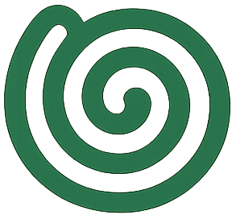

Не носи стаканчик
ещё три квартала
Открой карту и найди ближайшую урну за секунду.
Найти на карте →
bindy Открыть PWA ↗Карта ближайших урн и умная камера, которая сама видит переполнения. Никаких приложений — просто откройте Bindy.
Создаём карту чистоты
вместе с городом
ул. Алишера Навои, 20
Мы превращаем смартфоны горожан в сеть живых датчиков. Так чистота перестаёт быть чьей-то задачей — и становится общей суперсилой.
Открой карту и найди ближайшую урну за секунду.
Найти на карте →ИИ сам определит: урна, переполнение, курилка или спам.
Добавляй точки и копи eco-коины на приятные городские находки.
Узнать про награды →Увидел урну или переполненный бак? Открой камеру прямо в браузере.
Наша модель распознаёт объект, его тип и текущее состояние за секунду.
Новая точка появляется на карте, а важный сигнал увидят нужные службы.
Bindy направляет данные туда, где они создают реальное изменение: на карту, в эко-аналитику или к ответственным бизнес-партнёрам.
Подсветите чистую зону, точку отдыха или курилку на карте Bindy. Встречайте людей прямо у своей двери — с выгодой для города и для вас.
Оставьте Telegram или email — пригласим вас в первую волну тестирования Bindy.
Никакого спама. Только новости о запуске.